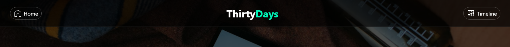
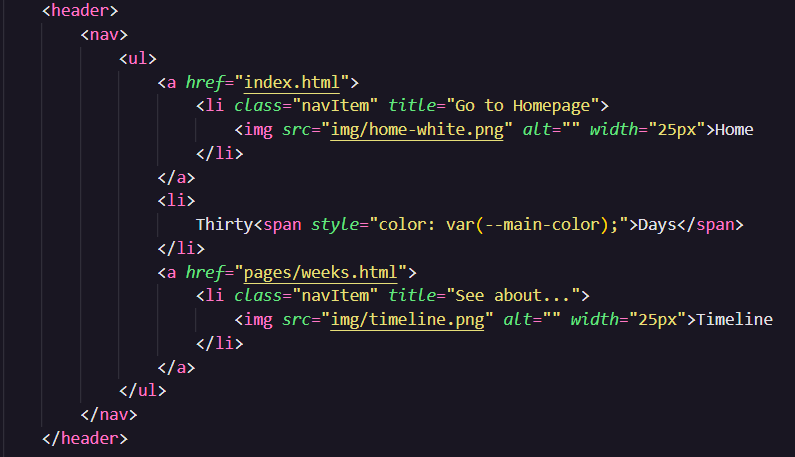
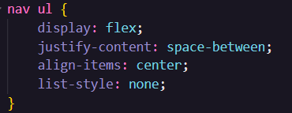
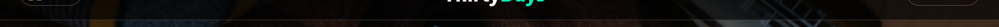
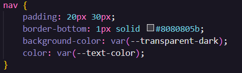
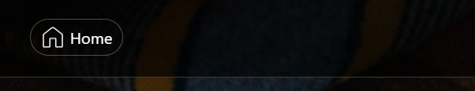
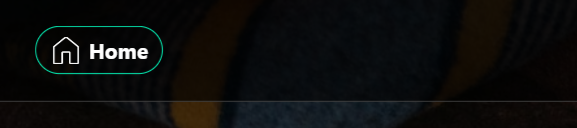
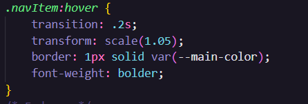
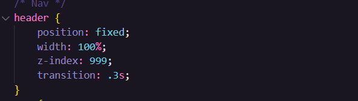

Navigation bar development
About the bar
One of the most important structures on the site is the navigation bar as it gives access to other pages and is found on all internal pages.
It was designed to be always at hand, it basically follows the scroll of the page without obstructing the view of the content.
The Body of the Bar
The bar structure consists of a header that semantically indicates that there will be a group of introductory elements to the page, such as a logo or navigation links, inside there is also a nav element that will also semantically indicate that there will be links that lead to other pages and finally an unordered list containing the contents
The heart of the bar
To align the elements, give them color and make the bar follow the scroll of the page, CSS was used
Alignment of items
To align the elements we had to use a set of css properties related to flexbox (explained in more detail here )
First, we align all the items on the bar itself, distributing the spacing between them and center-aligned
Background and Edge
The next step was to define a style for it, where using the border-bottom property we define a border at the bottom and as a background color we set a black color with transparency for the entire bar
 Navigation buttons
The content of the animation buttons were aligned using flexbox as well as the items, the cool part of this field was learning that it is possible to manipulate some states using css
In this case we manipulate the hover state, which is started when we hover over the element
Default
Hover
To manipulate the state, use the pseudo class hover next to the selector, from the properties it is worth highlighting the transition property that was used to have a smoother effect on the animation
Scrolling
This was the most complicated part to do because we had to learn about the position property, it can receive up to five different values but the one used here was fixed
The fixed property will position the bar in relation to the window and ensure that it will always remain in the same place, even if the page is scrolled.
The fixed property will position the bar in relation to the window and ensure that it will always remain in the same place, even if the page is scrolled.
Another important part of scrolling has been explained here